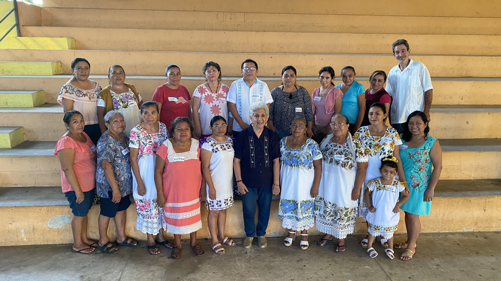
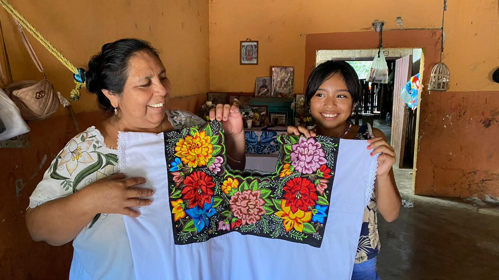
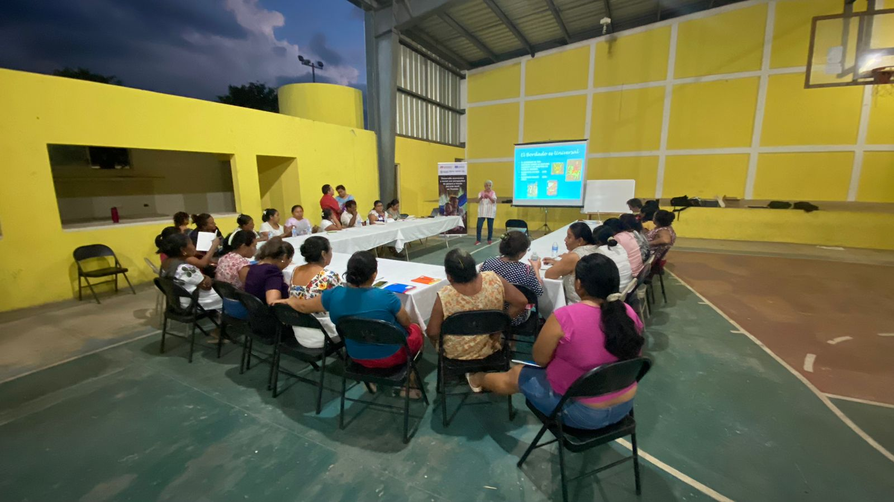

Durante los talleres de patrimonio cultural inmaterial, las bordadoras realizaron ejercicios para identificar y
clasificar sus productos según su función. En Tekit, los artículos bordados fueron organizados en cuatro categorías: uso
comunitario, por encargo, uso personal y para la venta. Señalaron que aproximadamente una tercera parte de sus bordados
se destina al uso personal, mientras que las dos terceras partes restantes corresponden a encargos, productos para la
comunidad y para la venta.
Dentro de los productos de uso comunitario se incluyen estandartes de gremios, manteles y vestimenta para figuras
religiosas. Entre los artículos elaborados por encargo se mencionaron zapatos, sábanas, tortilleros, trajes de baño y
fundas. Para uso personal identificaron prendas como hipiles, guayaberas, ternos, blusas, mandiles, pantalones y
manteles. Finalmente, entre los productos destinados a la venta señalaron porta celulares, camisas, batas, huipiles,
blusas y monederos. Esta variedad de artículos refleja tanto las necesidades culturales de la comunidad como las
oportunidades de generación de ingresos para las bordadoras.
En cuanto a las técnicas utilizadas, se documentaron en total 38 puntadas a lo largo de los 12 municipios del proyecto:
24 realizadas a mano y 10 a máquina. En Tekit, entre las técnicas manuales más destacadas se encuentran el Chuuy Kab,
costilla de ratón, punto de tambor y punto de cruz doble. En el caso del bordado a máquina, se identificaron puntadas
como calado, macizo, rejilla, sombreado y pespunte. Esta diversidad técnica pone en evidencia la riqueza y complejidad
del Bordado Maya Yucateco en la región.
Sobre la transmisión del conocimiento, las bordadoras comentaron que este proceso ocurre principalmente en el seno
familiar, donde madres, tías y abuelas son las principales responsables de enseñar. La mayoría de las bordadoras
actualmente también enseñan a otras personas. El aprendizaje suele comenzar entre los 6 y los 15 años y se consolida con
la práctica constante. Esta transmisión intergeneracional es clave para la continuidad de las técnicas y fortalece el
sentido de identidad cultural entre las nuevas generaciones.
¿Qué es para ti el patrimonio cultural inmaterial?
Para mí el patrimonio es una herencia, yo creo que es una de las palabras que podremos utilizar, una herencia. Pero
antes que nada creo que es un conocimiento que nos dejan nuestros antepasados, abuelas, mamás y papás y pues es parte de
nuestra identidad. Es un legado de memoria para mí.

Otra parte importante de las actividades que las artesanas realizaron fue la de hacer un mapa de actores, donde
identificaron los principales participantes en la cadena del bordado en Tekit. Los actores clave incluyen proveedores de
materiales, instituciones gubernamentales, organismos internacionales y actores de la iniciativa privada. Este análisis
les permitió visualizar a los colaboradores que influyen en la producción y comercialización del bordado, así como los
recursos disponibles para su fortalecimiento.
En el ejercicio del análisis FODA, las bordadoras identificaron las fortalezas, oportunidades, debilidades y amenazas
del Bordado Maya Yucateco en Tekit. Entre las principales fortalezas destacaron las habilidades especializadas de las
bordadoras, la transmisión intergeneracional del conocimiento y el reconocimiento del municipio como productor de
guayaberas. Las oportunidades señaladas incluyen el uso de redes sociales para ampliar mercados, la formación de
colectivos y la participación en eventos de promoción.
Sin embargo, también se identificaron debilidades, como la falta de organización formal entre las bordadoras y la
dependencia de intermediarios para la comercialización de sus productos. Entre las amenazas mencionaron la competencia
del bordado digital, así como los altos costos asociados a la participación en ferias y exposiciones.
Como parte del análisis de acciones de salvaguardia, se propusieron estrategias centradas en la documentación,
valorización y revitalización del bordado. Entre las acciones planteadas se encuentran la elaboración de manuales
técnicos, el fortalecimiento de colectivos, la promoción de ferias comerciales y la incorporación de talleres de bordado
en escuelas y espacios comunitarios. Estas medidas buscan preservar el Bordado Maya Yucateco como Patrimonio Cultural
Inmaterial y asegurar su transmisión a las futuras generaciones.
Durante los talleres sobre modelo de negocios y finanzas básicas, se identificó que el gasto fijo promedio fue de
$527.50 y el ingreso fijo promedio de $3,140. Además, se observó que el bordado representaba el 100% del ingreso
variable. Las participantes notaron que obtenían ganancias después de cubrir los costos de elaboración, lo que indica
que los precios de venta estaban correctamente estimados. También concluyeron que sus principales clientas eran mujeres
de su misma comunidad o de localidades cercanas, y que sus recursos más importantes eran los materiales utilizados y su
propio trabajo como bordadoras.

¿Después de todos los talleres, las bordadoras de Tekit valoran más su
trabajo?
Claro que sí, porque yo creo que antes ellas sólo trabajaban por trabajar. No sabían ni de la historia, no sabían qué
era el bordado, ya solo trabajaban para mantener a su familia. Pero yo creo que ahora sí lo valoran, porque todos los
talleres nos han enseñado de diferentes temas, ya sea lo que es finanzas y ponerle precios. Pero sobre todo nos han
enseñado la historia de nuestro bordado, desde dónde viene, cuál es la raíz, cuál es el trabajo que han estado viviendo
las otras generaciones. Y pues a través de todo lo que nosotros hemos aprendido, les hemos platicado a ellas y ellas se
asombran porque antes no, no conocían de eso, ahora sí aprenden a valorar los muestrarios que tienen en casa de sus
papás, de sus mamás, de sus abuelas. Ya lo traen y dicen wow, mira lo que hacía mi abuela. Como que valoran más, un
poquito más. La historia del trabajo, de su familia. No solo es el trabajo de los mayas, por así decir, sino que lo que
tienen en casa ya lo tienen como una reliquia. Es su patrimonio, porque a veces puedes tener el muestrario así, no lo
tienes, pero se pierde porque el conocimiento no lo tiene. No sabes cómo está hecho. Este es como un recuerdo, y ya
cuando tú como que descubres cómo está hecho, pues empiezas a valorar. Ahí empiezas a descifrar cómo vivían tus
antepasados. Y como eres.
Hablar de dinero, de economía no es fácil, ¿verdad? Porque uno solo hace su trabajo y pues más o menos calcula lo que
cuesta y toma nada más como que recuperas lo que es el material de trabajo, pero pues no tienes una entrada, no tienes
como que administrar o nada. En cambio, ahora ya sabemos cuánto cuesta la tela, el hilo, la corriente, el internet, el
diseño, la pintura, todo, todo, todo. Y pues ya más o menos calculamos cuánto es lo que cuesta y lo que cuesta la mano
de obra, el trabajo, las horas. O sea, ya, ya ni nos pagamos, ¿verdad? Lo hacemos y ni nos pagamos el bordado. O sea, no
sabemos cuánto nos vamos a cobrar a nosotras mismas. Y ahora pues sacamos la cuenta de todo. Y a veces es mucho más de
lo que nosotros vendemos. O sea, es mucho más de lo que lo que hicimos y lo vendemos muy bajo. Ni la mitad le cobramos
porque tenemos pena o algo así. Pero ahora siento que ya tenemos como que una idea de más o menos administrar todo,
desde comprar la prenda, el pasaje de ir a comprar, el tiempo de ir a comprarlo hasta terminar la prenda y hasta ir a
venderlo y todo eso es lo que vas a comer y todo. Pues ya tenemos como que una organización en todo, en todo el proceso
de vender una prenda. Imagínate en vender todo, o sea toda la organización de una pequeña microempresa para una familia
y también para un colectivo, que si nos vamos a juntar, que si nos vamos a ir allá, que comida para acá. Pero si, ya
tenemos más idea.
Durante los talleres de masculinidades Tekit se identificaron micromachismos encubiertos, relacionados con actitudes
condescendientes y la falta de igualdad en la toma de decisiones. Los compromisos asumidos, de los hombres que
participaron, incluyeron apoyar en las labores del hogar, valorar el trabajo de las mujeres, reflexionar sobre el
machismo, mejorar la comunicación familiar y fomentar un ambiente equitativo. También se comprometieron a ser modelos
masculinos positivos y a reflexionar sobre sus privilegios de género.
¿Qué opinan las bordadoras de Tekit de los talleres de masculinidades?
La verdad a mí me parece muy bien, porque yo creo que a todas las mujeres les pasa. Yo no estoy casada. Pero pues sí es
importante porque los hombres a veces no dejan a las esposas ir a trabajar. Por ejemplo, cuando hicimos La Catrina, en
donde participamos y todo eso. Teníamos que ir en la noche a trabajar y a veces nos íbamos a las ocho y terminábamos a
la una y algunos esposos pues apoyaban, les marcaban y venían por las chicas, por las mujeres. No había como que
problemas con eso. Nada más que les den su cena a los niños y a los esposos. Pero yo veía mucho apoyo de los esposos
porque de hecho nos iban a comprar el material ya muy de noche. Pero creo que sí son conscientes del trabajo de sus
esposas, que también es importante y es una oportunidad también para ellas. Yo creo que es el arte que ellas no expresan
y pues la oportunidad que los esposos les dan a las chicas que están en el grupo. La verdad es muy buena.